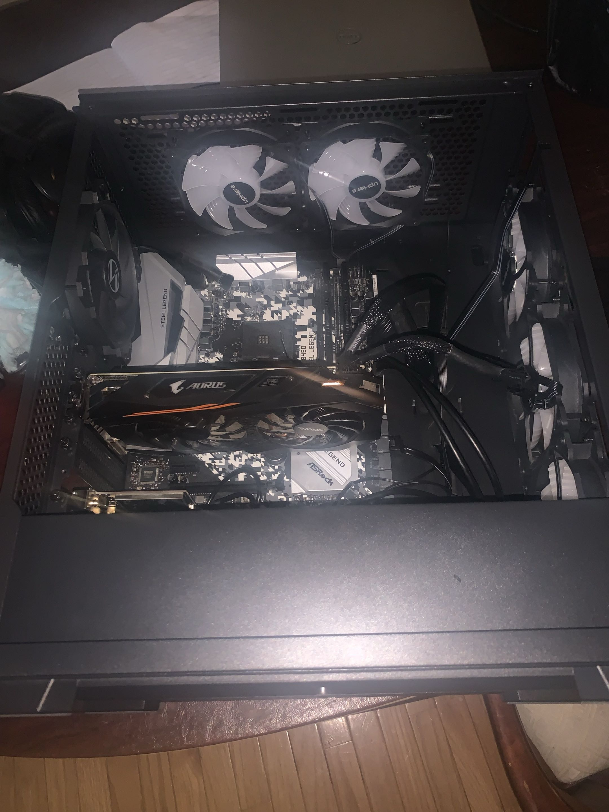

Hardware
From my Game Controller Project, to the PCs I've built in the past, to the Hardware Description Languages I've been learning, linked below is a PowerPoint of my Current Hardware related Projects.
* This is the first PC that I built :)
My is a current sophmore attending the University of Maryland - College Park, studying Computer Engineering. I have has a strong passion for both hardware and software development, and is always eager to learn new technologies and techniques. On the Hardware side, I have hands-on experience building and troubleshooting computer systems, designing PCBS using KiCad, soldering/desoldering PCBS, and programming microcontrollers. On the software side, I have experience in Python, Java, C++, and Ardiuno IDE, with professional experience developing automation scripts and data analysis.
My long term goal is to pursue a career in hardware engineering and VLSI design, building the semiconductors that the world depends on.

From my Game Controller Project, to the PCs I've built in the past, to the Hardware Description Languages I've been learning, linked below is a PowerPoint of my Current Hardware related Projects.
* This is the first PC that I built :)

From my recent experience at the National Energy Technology Laboratory, to my SharePoint website, and now this portfolio, linked below is the current projects I have regarding software.
As I go further into my career, there are various jobs and projects that I am passionate about, and there are skills that I will continue to develop to excel in these areas.
Designing digital and analog integrated circuits at the transistor level using hardware description languages like Verilog and VHDL, with tools such as Cadence Virtuoso for schematic capture and layout verification.
Programming field-programmable gate arrays to prototype and test hardware designs before silicon fabrication, requiring proficiency in Verilog, timing analysis, and digital logic design.
Designing multi-layer printed circuit boards using tools like Cadence Allegro or Altium Designer, with focus on high-speed signal routing, power delivery networks, and electromagnetic interference management.
Developing and validating system-on-chip designs that integrate processors, memory, and peripherals onto a single die, requiring deep knowledge of computer architecture, simulation tools, and hardware-software co-design.
Building performance-critical applications and tools in C++ and Python that interface directly with hardware, including memory management, low-level optimization, and developing software that controls or communicates with physical systems.
Developing Python-based automation frameworks, data processing pipelines, and computational tools that handle large-scale datasets — building on skills in libraries such as NumPy, Pandas, and scripting environments used in research and engineering contexts.
If there's anything you'd like to discuss, feel free to reach out!